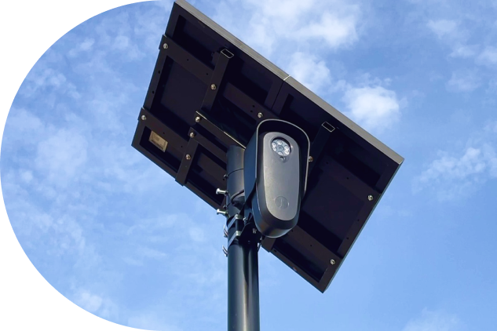

WHAT'S HAPPENING
SOURCES: CPRA-OBTAINED AUDIT LOG FILES · Auburn Police Department and Placer County Sheriff's Office, 2022-2026 · Note- We are still awaiting several missing months; final numbers subject to change (we expect numbers to increase)
WHAT'S HAPPENING // LOCATIONS
WHERE + WHAT TO LOOK FOR
Community-reported ALPR camera locations. If you spot one that's missing, add it to the map.
Flock cameras often have: Black housing · Teardrop shape · Usually with solar panels

WHY IT MATTERS
OUR CONCERNS
PRIVACY + DATA SHARING
- On June 13, 2022, Auburn police told City Council "We want it to be that you can't enter the city of Auburn without your license plate being scanned." They got their wish: cameras now track your license plate, location, time, and direction of travel. They record pedestrian activity, perceived demographics (race, gender, height, weight, and any unique identifiers. And all that data is now under corporate control.
- The service contract between Auburn PD and Flock give the company a broad license to use Auburn's data, including a perpetual, irrevocable, worldwide, royalty-free, fully paid license to use, reproduce, modify, and distribute your data (Service Agreement, section 4.2).
- ALPRs can be extended with ever-more-invasive surveillance technology, such as sensors that track the unique identifiers in your phone, your wearables, your infotainment systems, your Bluetooth devices- even your pet's microchip- to enable identification.
HIGH COST, LOW EFFECTIVENESS
- Auburn's 2022 service agreement with Flock Group Inc. showed costs of $2,500 - $3,250 per camera; in 2023 PCSO approved a 2-year, $236,600 contract for 42 Flock cameras. Meanwhile, many of them end up stolen, vandalized, stripped for parts, or dumped in the canal.
- There is no evidence to suggest that either Auburn's or Placer County's ALPR cameras have been effective at solving or preventing crime.
- The millions of documented instances of access from out-of-state and federal agencies leave the city's finances at risk of the exact type of lawsuit that affected the city of El Cajon. It also leaves the city vulnerable to legal action for Constitutional violations, as the Supreme Count has ruled that
SECURITY RISK
- Flock employees have demonstrated their ability to observe playgrounds and children's gymnastics rooms.
- We found 219 searches in which Flock Inc. itself accessed Auburn's cameras.
- The technology contains 92 published vulnerabilities and can be hacked in under 30 seconds.
- Dozens of law enforcement officers have abused it to stalk romantic interests.
- It's been used to surveil people seeking abortions in Texas and harass protesters .
- It's been used by immigration enforcement officers who shot a Chicago Montessori schoolteacher (they falsley claimed she was a terrorist and made sexual jokes as they shot her five times.)
LACK OF PUBLIC CONSENT
- The California Code, Civil Code - CIV § 1798.90.5 states: "a public agency that operates or intends to operate an ALPR system shall provide an opportunity for public comment at a regularly scheduled public meeting of the governing body of the public agency before implementing the program." City Council mentioned businesses were pushing the program; no residents spoke in support.
- The subsequent renewal of the contract with Flock was pushed through city council via the consent calendar, with no discussion. Consent items are intended for non-controversial agenda items.
- They are massively unpopular: Between August 2021 and May 2026, 82 Flock contracts were terminated across 28 states, including Los Angeles, Mountain View, Santa Cruz, and Los Altos Hills
- They are eyesores: cities cancel contracts and must cover them up with trash bags.
THE DATA // FIRST-PASS AUDIT
WE FOUND MILLIONS OF ILLEGAL SEARCHES
SOURCES: CIV. CODE § 1798.90.55(b) (SB 34, 2016) · CAL. AG BULLETIN 2023-DLE-06 · CAL. AG v. EL CAJON (2025)
WHAT'S HAPPENING // LACK OF TRANSPARENCY
How many searches lack a substantive reason?
*We made an additional request that PCSO supply the "reason" fields, but they refused.
All of Placer Country Sheriff Office's ~8.6M searches have the reason hidden, and ~1.4M (about 12.5%) of Auburn PD's are either blank or use non-substantive strings such as "Inv" or "n/a."You can't claim to be accountable if the one field that proves accountability, is the one field you won't hand over.
THE DATA // FEDERAL + OUT-OF-STATE ACCESS
WHO'S LOOKING?
During the April 27, 2026 City Council session, the Auburn Police Chief said "The only information we share from the license plates we read are with California agencies only." That was a lie. Over 4 Million searches were conducted by 4,406 non-California or federal entities, despite it being prohibited. Here are the top-accessing agencies and their # of searches:
|
Houston TX PD
849,831
|
Dallas TX PD
101,330
|
Cobb County GA SO
34,656
|
New York State Police
33,414
|
|
Fort Worth TX PD
32,202
|
Fairfax County VA PD
28,238
|
Oklahoma City OK PD
26,841
|
Illinois State Police
26,570
|
|
NCRIC ( a Federal Fusion Center)
535,727
|
|||
SOURCES: CPRA-OBTAINED AUDIT LOG FILES · CAL. CIVIL CODE § 1798.90.55(b) PROHIBITS SHARING WITH NON-CALIFORNIA ENTITIES
LEARN
FIND OUT MORE
FLOCK 101
Flock is a private surveillance company that builds automated license plate recognition (ALPR) cameras used by police departments, HOAs, and private businesses. Each camera photographs plate, make, model, and color, and timestamps the location.
CPRA TOOLKIT
Learn how to file a California Public Records Act request to obtain audit logs, vendor contracts, and retention policies — use our template to request the same records we did.
TAKE ACTION
LET'S DEMAND...
End all ALPR Contracts
A substantial wave of cities and towns have ended or declined to renew their Flock Safety contracts. Auburn's residents deserve the same choice, made in the open.
Explain the Stripped Records and Illegal Access
Every 'reason' column was removed from the PCSO public records, while out-of-state and federal agencies have queried Auburn's camera data. Residents can't audit what they can't see.
No New Surveillance Tech Contracts
If the public is to be subject to any new or expanded surveillance technology, now or in the future, they deserve to know the details and implications- and to have a say in the matter.
TAKE ACTION // PUBLIC COMMENT
DON'T KNOW WHAT TO SAY? READ THIS.
My name is [your name]. I'm a resident of Auburn and I've lived here for [number] years. Auburn's own Flock audit logs show over 11 million external searches of our camera network —including federal agencies like the FBI and ATF, and thousands of out-of-state agencies that California law doesn't allow this data to go to. I'm asking the Council to end the Flock contract, release the full unredacted audit logs, and commit to no new surveillance technology without a public vote. Thank you for your time.
My name is [your name]. I'm a resident of Auburn and I've lived here for [number] years. [Placeholder — one or two sentences on why this matters to you personally.] We requested Auburn and Placer County's Flock audit logs through a public records request. What we found: over 11 million external searches of Auburn's cameras, at least 15 federal entities — including the FBI and ATF — accessing our data, and thousands of out-of-state agencies with no legal right to it under California Civil Code § 1798.90.55(b). Meanwhile, Placer County stripped the "reason" field from its own records and told us we'd need a court order to see it. I'm asking the Council to do three things: end the Flock contract, publicly explain the stripped records and this out-of-state access, and commit to no new surveillance technology without transparency and public input. Thank you for your time.
My name is [your name]. I'm a resident of Auburn and I've lived here for [number] years. [Placeholder — two or three sentences on your personal connection to this issue.] [Placeholder — a sentence naming a specific concern: cost, data-sharing, or lack of oversight.] We requested the actual Flock audit logs for Auburn and Placer County through the California Public Records Act, and what we found should concern every resident here. Auburn's cameras were externally searched over 11 million times. At least 15 federal entities had access — including the FBI, ATF, and even U.S. Border Patrol — several logged as "inactive" only after the fact, meaning nobody stopped this access until well after it happened. Thousands more searches came from out-of-state agencies in states with different laws than ours- all in apparent conflict with the California statute that's supposed to keep our license-plate data inside California. And when we asked Placer County Sheriff's Office why these searches happened, we found the "reason" field had been stripped entirely from the records — they told us we'd need a court order just to see why our own cameras were queried. A growing number of cities across the country have already ended their Flock contracts over exactly these concerns. I'm asking this Council to do three things tonight: first, end Auburn's Flock contract; second, publicly explain the stripped records and the out-of-state and federal access we've documented; and third, commit that no new surveillance technology comes to this city without full transparency and a real public process. Thank you for your time and for representing this community.
Auburn City Council meetings
are on the 2nd and 4th Monday of each month, at 6pm, in the City Council Chambers at City Hall1225 Lincoln Way Auburn, CA
Placer County
Board of Supervisor meetings
are on the 2nd and 4th Tuesday of each month, at 9am, in the Placer County Administrative Center175 Fulweiler Ave. in Auburn, CA
TAKE ACTION // EMAIL
SEND AN EMAIL.
Speaking up in person is the most effective thing you can do, but sending a quick email helps too. Here's who to contact, and a pre-written email you can copy, paste, and personalize.
Subject: Public comment — ALPR camera program
To the Auburn City Council,
I'm writing as a resident to ask that you end Auburn's Flock Safety ALPR contract,
publicly account for the surveillance-sharing practices documented below, and commit
to no new surveillance technology without full public transparency.
[One or two sentences on why this matters to you personally.]
Through a California Public Records Act request, we obtained Auburn PD's and Placer
County Sheriff's Office's Flock Safety audit logs. The findings raise serious legal
and policy concerns:
Auburn's cameras were externally searched more than 11.5 million times, including
access from at least 15 federal entities -- among them the FBI, ATF (at two field
offices), and U.S. Border Patrol's Grand Forks Sector -- several logged as "inactive"
only after their access had already occurred. Thousands more searches came from
out-of-state agencies across nearly every U.S. state.
Under California Civil Code Section 1798.90.55(b) (enacted via SB 34, effective
January 1, 2016), a California public agency may not sell, share, or transfer ALPR
data except to another California public agency. Out-of-state and federal agencies
do not qualify. This is not a hypothetical concern: in October 2025, the California
Attorney General sued the City of El Cajon for the same underlying conduct.
Separately, when we requested the "reason" field documenting why each search was
conducted, Placer County Sheriff's Office refused to produce it, stating it would
require a court order -- despite Placer's own transparency portal stating that "all
system access requires a valid reason." Residents cannot audit a policy the agency
itself won't let them see enforced.
We are asking the Council to:
1. End Auburn's Flock Safety contract, as a growing number of cities nationwide
have already done;
2. Publicly explain the stripped "reason" records and the extent of out-of-state
and federal access to Auburn's camera data; and
3. Commit that no new or expanded surveillance technology will be adopted without
full public disclosure and a real opportunity for community input.
Full findings and source documents are available at www.deflockauburnca.com .
Thank you for your consideration,
[Your name], [Your neighborhood]
TAKE ACTION // STAY IN THE LOOP
FOLLOW US
Get updates on key developments, meeting alerts, helpful resources, and actions you can take.